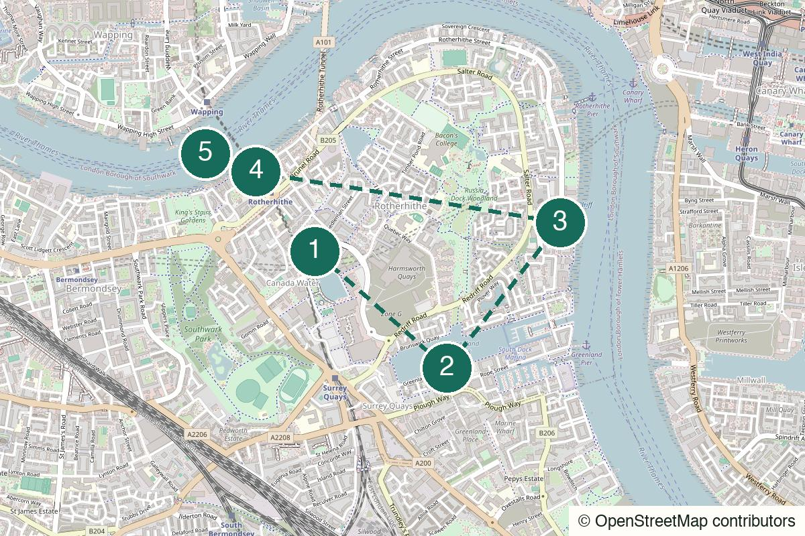

London Walked in person
Maida Vale After Dark
Fireplaces, film locations and a little bit of Little Venice.
Start Maida Vale Underground
Not yet field-walked · verify live details
Warehouses, water and an old-room finish for a quieter stretch of the Thames.
No field notes from readers yet — share one if you walk it.
Canada Water Underground and Overground – Surface by the library.
Greenland Dock
Open the whole walk (opens in a new tab)
Individual pins are useful, but confirm path access, opening hours and the full riverside sequence.
We never ask for your location.
Start near the water, follow the older dock edge, pause where the river opens out and finish in a verified pub room. The value is the long middle stretch where nobody has to perform.
More atmospheric than eventful; several stretches are deliberately quiet.
Better for a second date than a grand first impression.
Best for two to four people who are content to walk and talk.
Works alone if you like water, old brick and a quiet finish.

Canada Water station, London SE16
From the start Meet outside the station by the library, then set Greenland Dock as the next pin.
A practical start with an immediate move towards water rather than a vague walk through the estate.
Walk here from the station to Canada Water (opens in a new tab)
Greenland Dock, Rotherhithe, London SE16
From the previous stop Follow the old dock edge until it meets the Thames; use the live map for the public riverside connection.
The water widens here and Canary Wharf becomes a skyline across the river. This is the promised wide-view stretch.
Walk from the previous stop to Greenland Dock → Thames Path (opens in a new tab)
10 Rotherhithe Street, London SE16 5ET
From the previous stop Continue west on the Thames Path to the farm entrance. Check café opening hours before relying on an indoor pause.
A working city farm directly on the route: slightly absurd in context, which is precisely why it earns the pause.
Walk from the previous stop to Surrey Docks Farm (opens in a new tab)
Rotherhithe Street and Railway Avenue, London SE16
From the previous stop Continue west into the older village streets. Use the Brunel Museum pin for the Thames Tunnel shaft and look for St Mary’s nearby.
Three quiet streets of old village, a church and the original Thames Tunnel shaft. Ten unhurried minutes is enough. Brunel turns up once more on this site, lying down, in Kensal Green.
117 Rotherhithe Street, London SE16 4NF
From the previous stop Continue along Rotherhithe Street to number 117. If it is full, try The Ship on St Marychurch Street two minutes inland.
The old-room finish with a jetty over the water. Check hours and weather conditions before promising the outside section.
Walk from the previous stop to The Mayflower (opens in a new tab)
Nearest practical station: Rotherhithe Overground
Rotherhithe station is about three minutes from the pub. Canada Water remains the simple exit at the start of the route.
Grey afternoon or early evening
Food is optional; verify the final kitchen before relying on it.
A lower-energy version with one riverside stretch and a drink.
The complete version for a slow afternoon.
Shorten the exposed river stretch and move quickly to the verified indoor stop.
Continue towards Bermondsey or stay for a second drink.
Leave from Rotherhithe, Canada Water or the nearest practical station before the final stretch.
Grey sky helps. A timetable does not.
This day sounds like: Morphine – Empty Box
Help keep it useful
Closed gates, changed hours and the point where you bailed are more useful than polite applause.